前言
这几天有幸因为台湾主办方和国内著名出品人史海峰的邀请前去台湾进行了技术交流。这次技术交流一方面让台湾那边了解目前国内互联网行业的一些技术和状态，另外一方面也让我们可以更加了解台湾互联网技术方面的情况。
毕竟是来交流技术的，所以先说一下我们这次两岸技术交流的情况和我对于这次交流的一些心得和体会。
技术交流
从技术交流的现场来说，台湾的技术交流场面很火爆。基本上座无虚席，还有没有抢到主会场的只能看直播。但架构场相对就没有那么理想了，原因后面会讲到。火爆的会场如图：
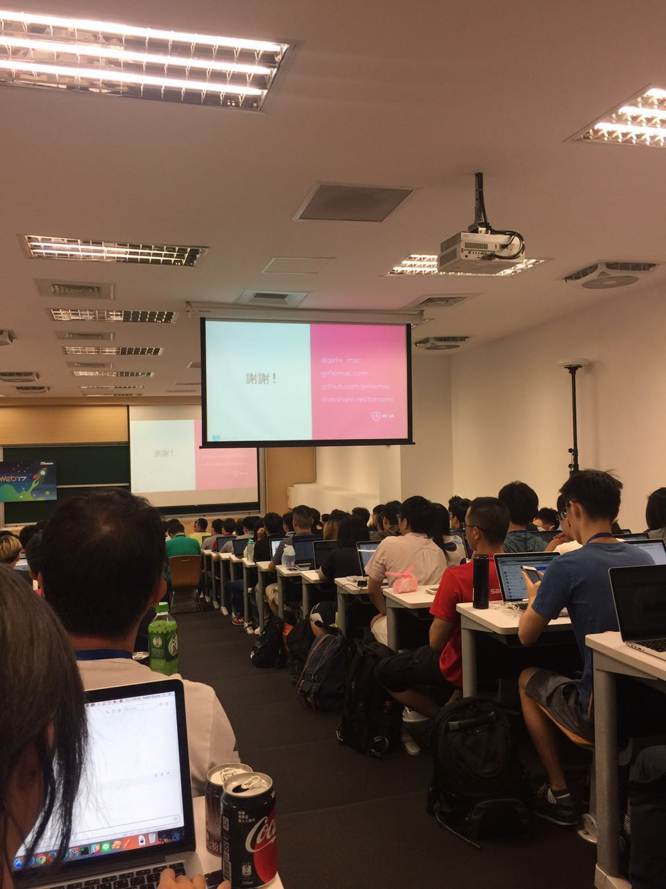
台湾目前的互联网技术水平和国内相比，说句实话：相差的有点远。在台湾，大多数的工程师都是FullStack类型，并不像是国内的互联网行业：不想当架构师的程序员不是好程序员。而且台湾的技术工作分工也没有国内细分的详细。在台湾最受欢迎的是前端，并不是架构师等后端职位。我们在架构场开讲的时候做过几个调查：
1. 在座的有多少个是写后端的？举手的只有3个左右，当然我们说的是纯后端。
2. 这里有多少个title或者日常工作是架构师？ 举手的只有1个。追问：用什么语言？答：python。
而我在交流的时候也问了几个问题，有技术也有业务：
1. 看网络小说的有多少？大概有20个人左右，人还是挺多的；
2. 知道阅文集团/起点/腾讯文学任何一家的？前面举手的大概都知道。这里有个情况，其实我们的一些作品有在台湾播放电视剧，我注意一下台湾的电视台，我至少看见有3部：花千骨，芈月传，甄嬛传在播出。后来打听了一下，甄嬛传几乎被当成了“当时内地的还珠格格那种热度”在台湾播出。对我们来说，这个市场还是很大的；
3. 技术上就又不一样了，比如讲分库分表和数据路由的时候，基本上下面是一片懵逼。在讲到后面调度系统的时候，quartz这个东西只有3个人听过，cron表达式也只有5个人听过；我调查了一下，写过定时任务的一个都没有。我就有点纳闷：他们的网站难道没有定时任务需要处理吗？
我们几个讲师其实也挺费劲，会前讨论应该怎么样让他们听的懂我们在讲什么？会后我们还是在讨论为什么出现这个情况，后来我们总结了一下，主要归结如下：
1. 用户。台湾一共2200w人，内地15亿。没有用户量爆发式增长，所以很多问题都碰不到，他们也就不用解决，像我们陈老师演讲的时候说，我们一开始规划下来需要26个数据库，马上下面的留言板上说，26个数据库，太庞大了，囧；
2. 必要性。按照目前的机器硬件配置，在没有爆发式增长的情况下，没有架构也好，不要后端也罢，只要会写代码，拉几个开源的就可以上了。可能缓存都用不了，不要说什么读写分离、分库分表这些东西了；
3. 国外的冲击。米国的互联网台湾都可以用，想fb，google这些都可以，畅通无阻，那么社交他们也主要用line，所以台湾根本没有自主的互联网企业和软件。在“5分钟演讲”环节，有个台湾本地哥们提出来一个问题：台湾有名的软件公司有哪个？只回答了一个“趋势科技”就没了，互联网技术公司一个都没有；
4. 重视前端。因为碰不到用户量和数据量的关系，又因为大部分东西都是用国外的，所以剩下的能做的就没几样了。你不做前端做什么呢？
台湾的互联网技术除了这些之外，还有几个特点：
1. 脚本语言占大多数。我们在场内看到的最多的开发者是用nodejs，再下面就是go之类的新兴语言，也有python之类的脚本。但是国内很多互联网公司喜欢用的java，c/cxx这些语言在这里已经绝迹；
2. 拼凑。几乎所有的开发都是用了开源的组件拼拼凑凑起来的。印象比较深的是一个哥们讲微服务，然而他并没有去讲微服务怎么怎么实现，而是讲了用了什么什么框架，什么什么组件，在什么什么上，搭起来了。就是那种纯粹的堆积木。我不知道如果这要是放在内地，会不会出去了要挨揍；
3. 追新。什么新用什么，不会管这个新的东西到底怎么样，是不是适合，这些好像他们不太会去考虑。上面说到的开源使用，有一些就是觉得为了使用而使用，为了体现我们这个东西是多么的新潮，使用了多么cool的新技术就去使用了，而不会去规划和思考底层的问题；
这次的技术交流，对于我们内地来的讲师来说，最感同身受的是：我们的互联网技术确实已经起来了。说句大话，对手可能只有一个了，剩下的都是渣渣！
对于台湾技术来说，要想真的提高，必须也要从商业模式和底层技术开始寻找出路，有了良好的商业模式，有用户开始喜欢使用你们的产品了，自然而然的对一些后端的技术会有更高的要求。技术自然就会跟着起来了。但就从现阶段来看，目前的台湾就像我们在10年前、20年前看硅谷一样：一切都是那么的新奇、牛逼闪闪而高高在上。
台大
说完演讲正事，再说一下这次的举办场地。主办发选择了台湾大学的社科院作为举办场地让我受宠若惊。第一次站在学术氛围浓厚的大学进行演讲，难免还是有点紧张。演讲之余我们几个大陆来台的讲师也在台大转了一下，我有几个体会：
- 台大的校门很低调，低调到如果是在路上走，你可能会根本没在意它的存在。
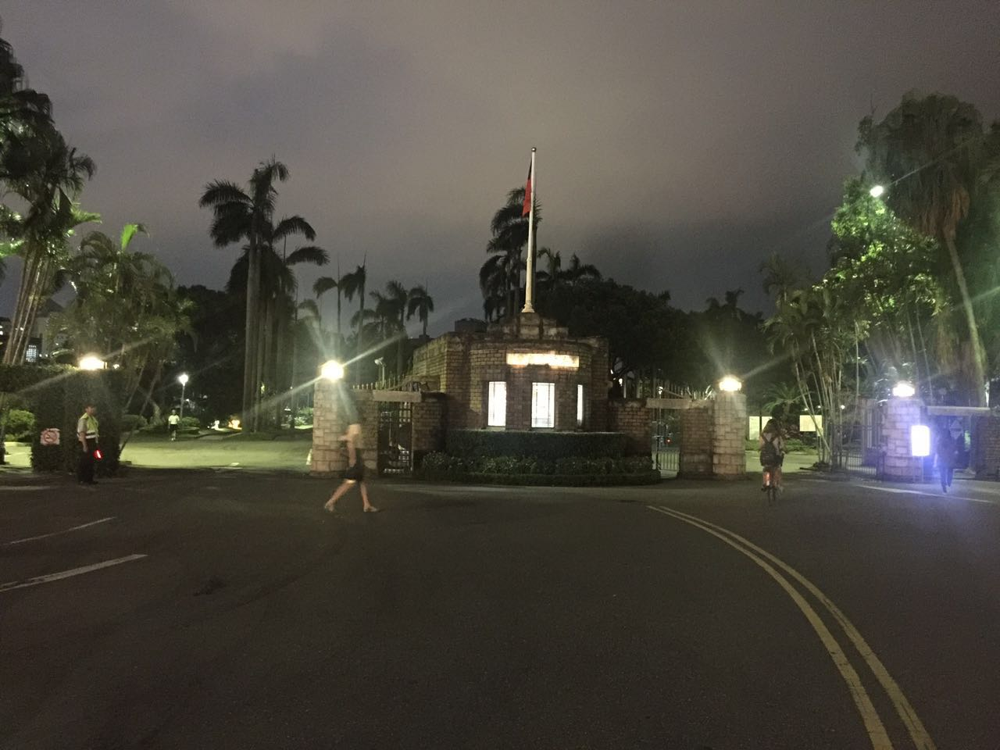
只有走进了看，才能看清楚上面的字。
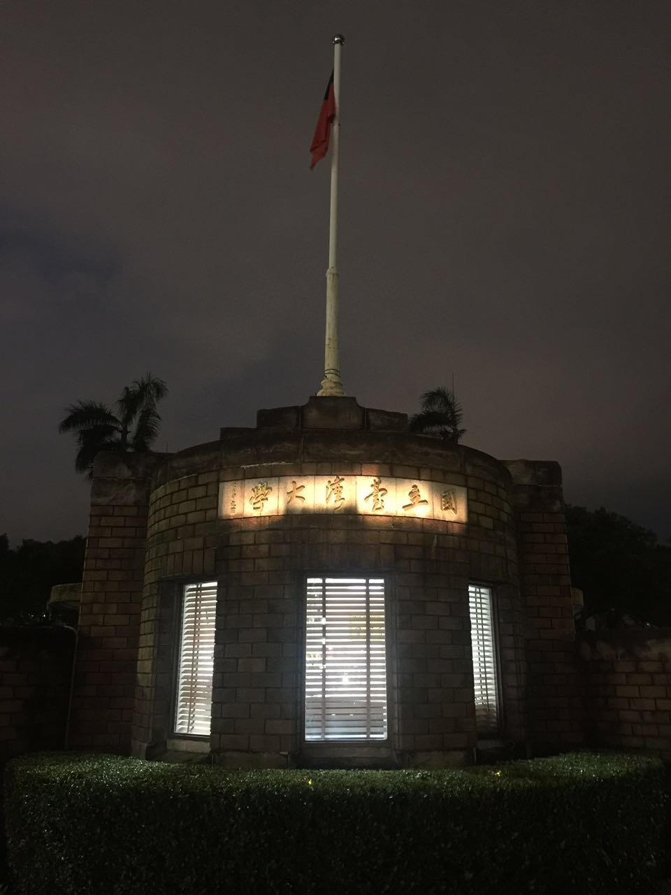
怎么说台大也是出了很多名人的地方，不管是政治届、娱乐圈、工商界、科技界还是学术界，名人都是大把大把的不缺。但是这个校门真的太低调；
- 台大内部给我的感觉就像是一个缩小版的东京大学，不管是建筑风格、院系设置还是人文情怀，几乎都是照搬东大而来（PS：后来认识了一个导游哥们，他说台大以前叫帝国大学，是在日本占据台湾的时候兴建的，后来国军入台后才改名台大。回去一查，果然前几任校长都是日本人）。
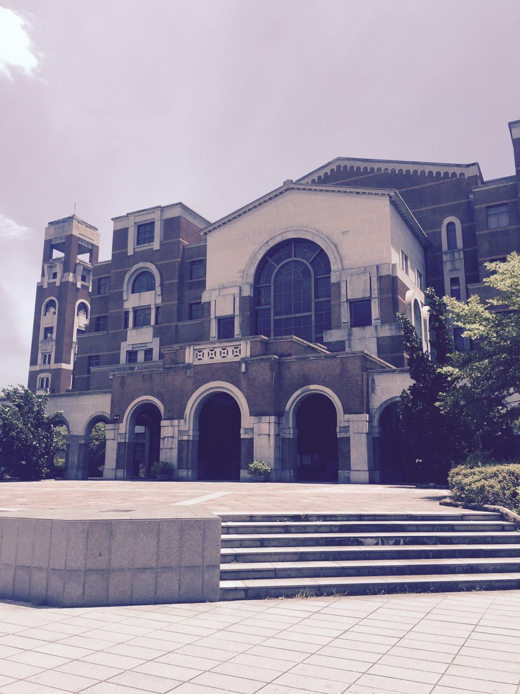
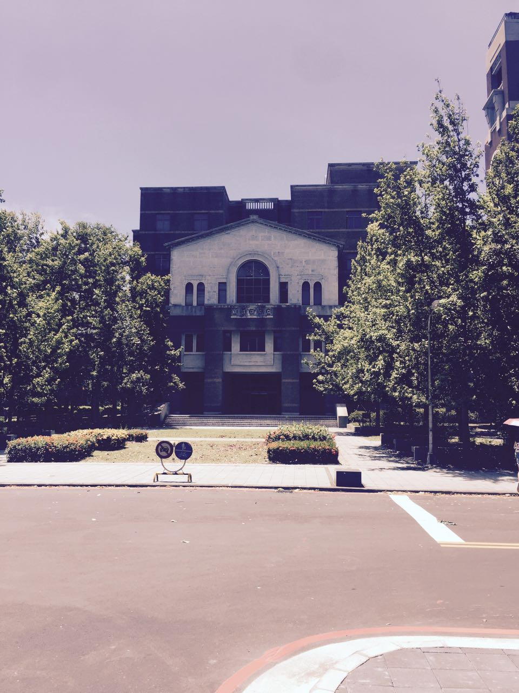
这是国内的电子信息工程系，这里的名字叫什么来着，忘记了，反正挺长而且挺繁琐。
没记错的话应该是日本留学生或者是日本留学生留下的一个雕塑作品（PS：这里可能记不太清了。这个雕塑还有一个是草地上的建筑模型，这两个不知道哪个的作者是日本人了。有点健忘，不好意思）
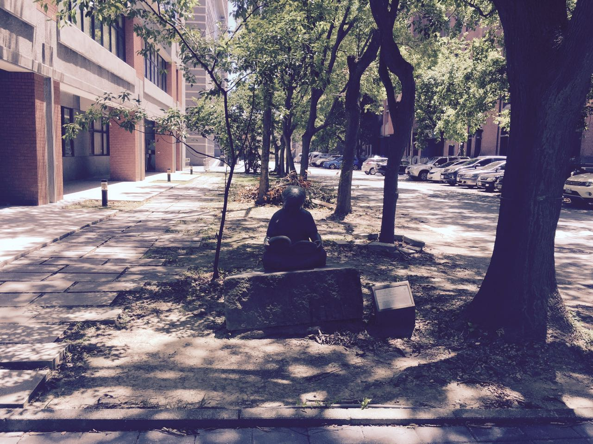
这个是台大的图腾。一个钟。上面写着：一天其实只有21个小时，另外3个小时是用来......
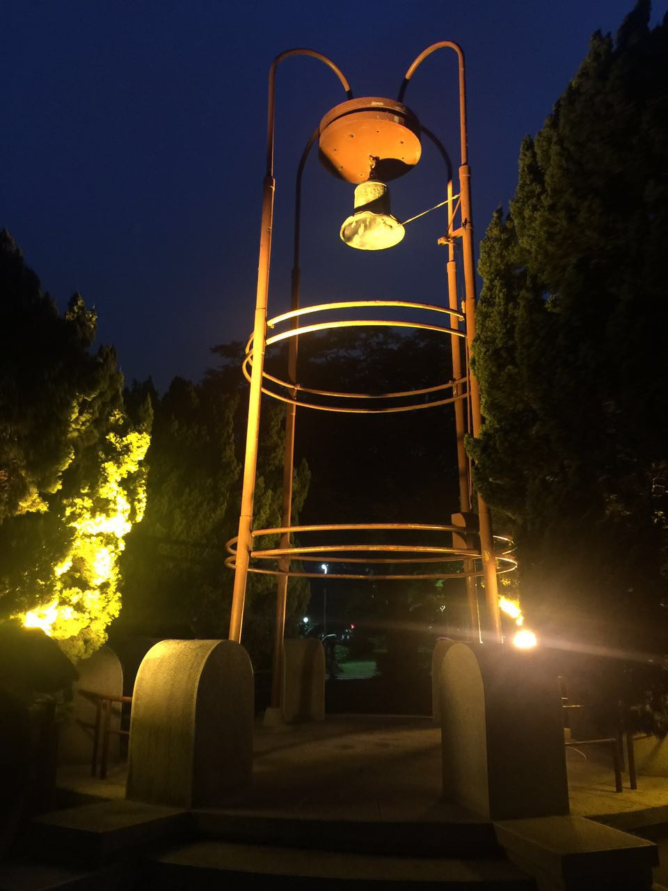
彩蛋
程序员就是程序员，会后主办方安排我们去领略了一下台湾当地的风俗人情。其中有个放天灯的环节，一般人在天灯上无非都留下些什么“身体健康”，“全家幸福”，“xxx爱你一辈子”这种的话。只有我们程序员的天灯是那么的与众不同：
hello world。其实这个不是我写的，虽然拍的是我。我写的是 root#:rm -rf /
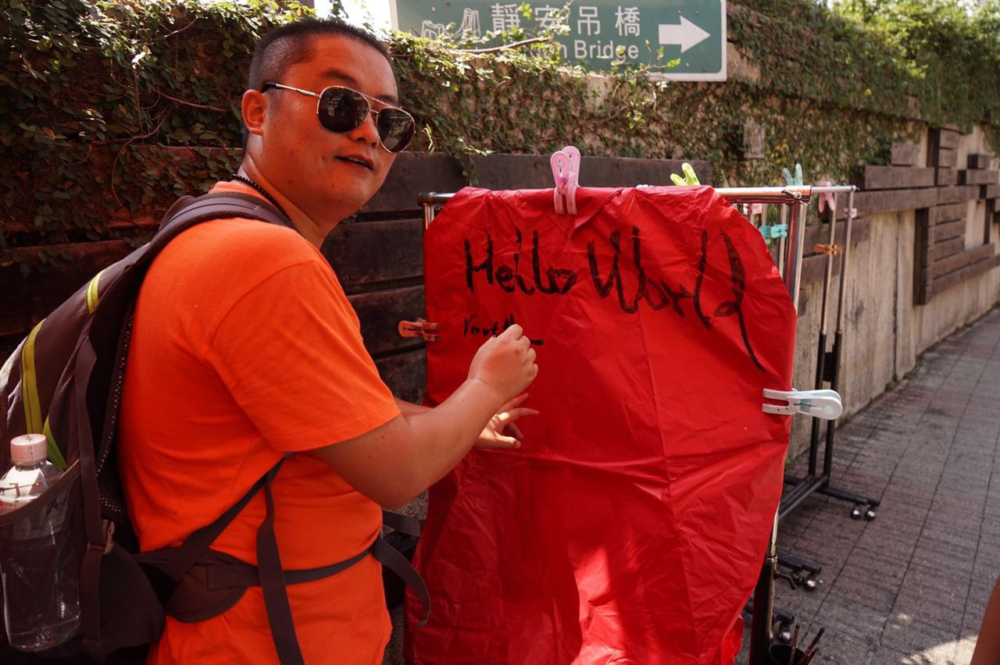
来自前端兄弟的javascript是世界上最好的语言。其实我是想用c反驳的，但是家伙狡猾狡猾的，全写满了，不给机会！
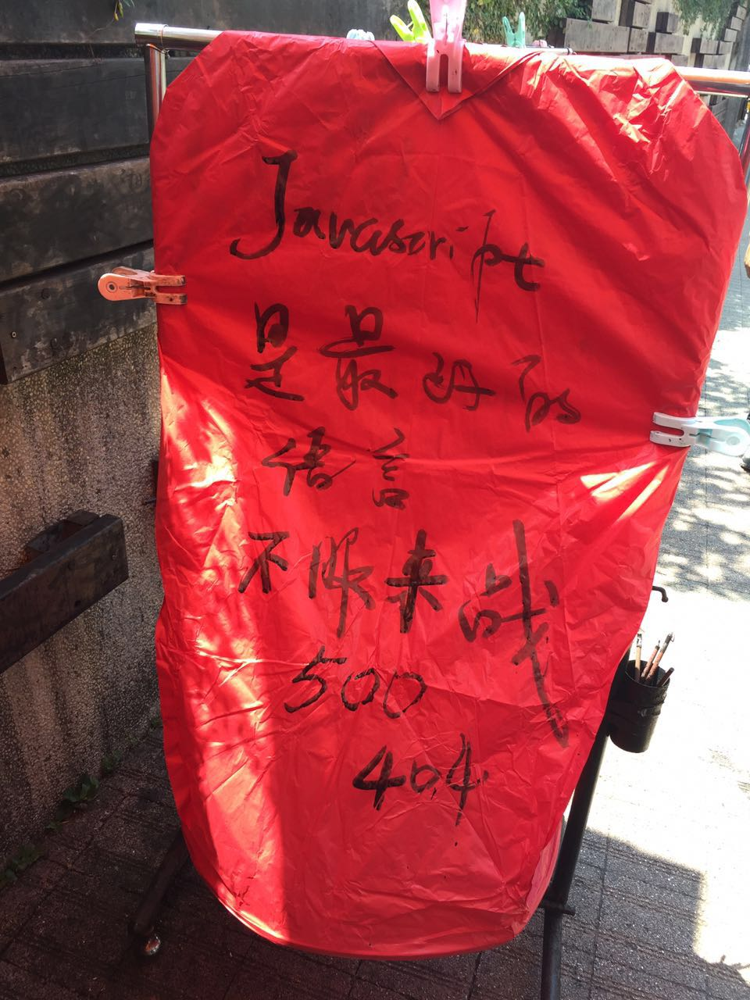
58沈大师的“当场面试”–快排算法。可惜最后“一致不怀好意的”判定有两个问题：第一个，函数没写全，编译不通过；第二个，递归漏写了退出条件，CPU100%。
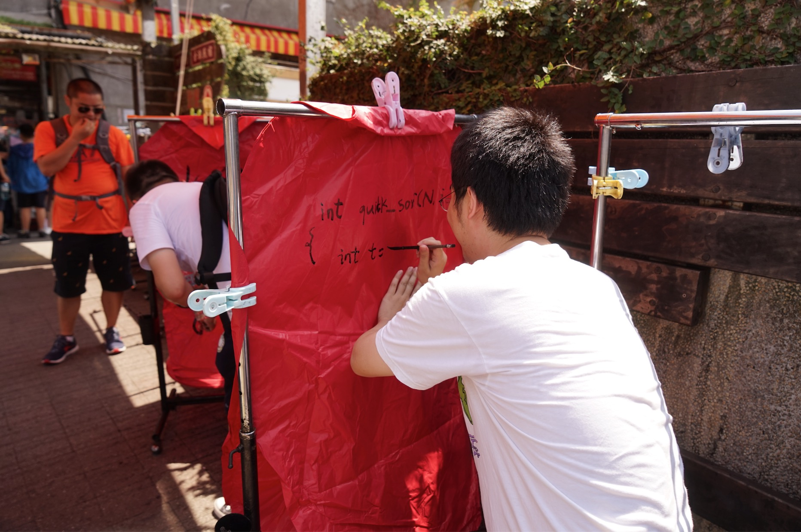
主办方和我们架构场的讲师们
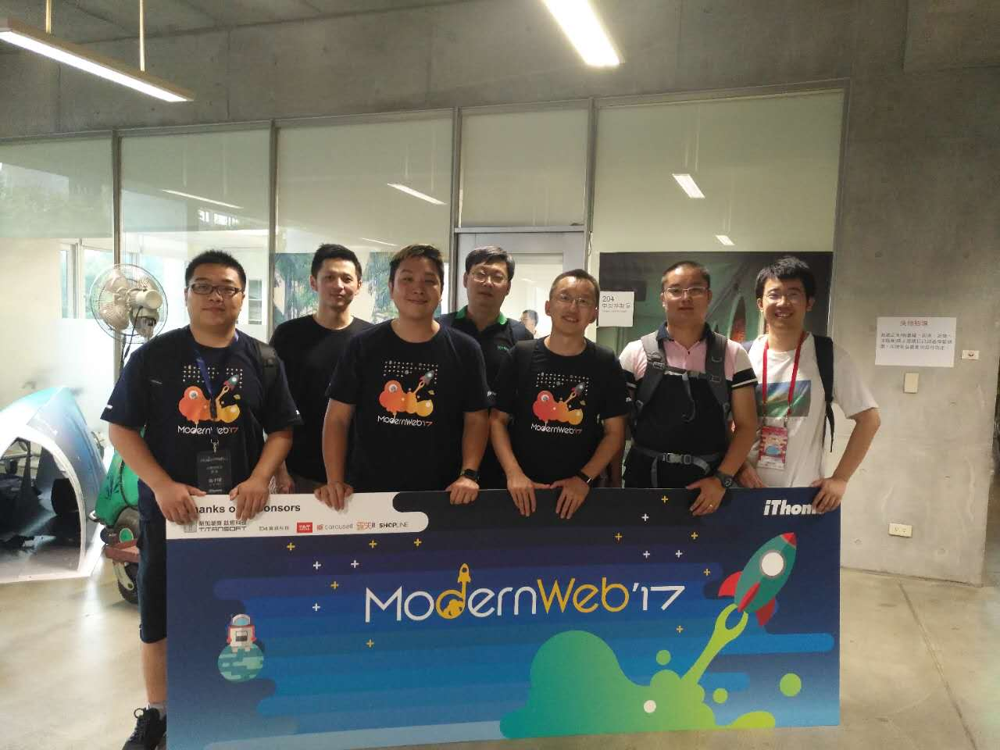
这是我们大陆的所有讲师在101大楼，101大楼发生了很多故事，但是只能发这一张了。大陆讲师就缺钟恒了，家伙跑出去单独行动了，目的比较可疑。
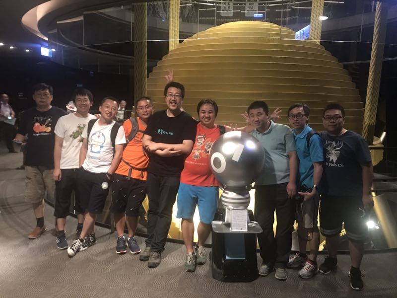